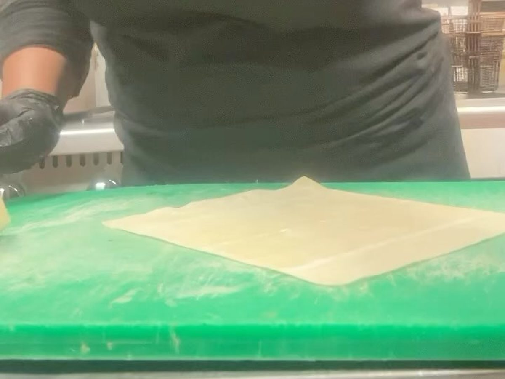
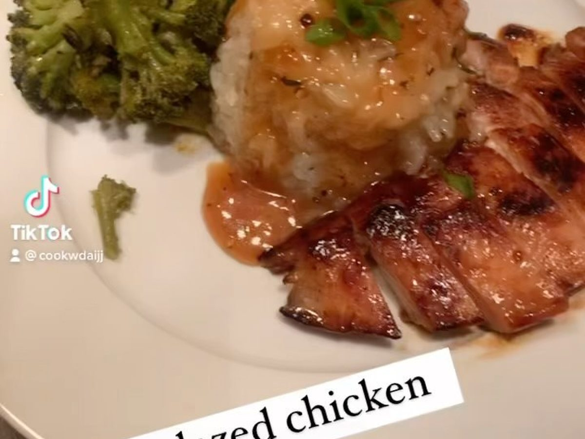
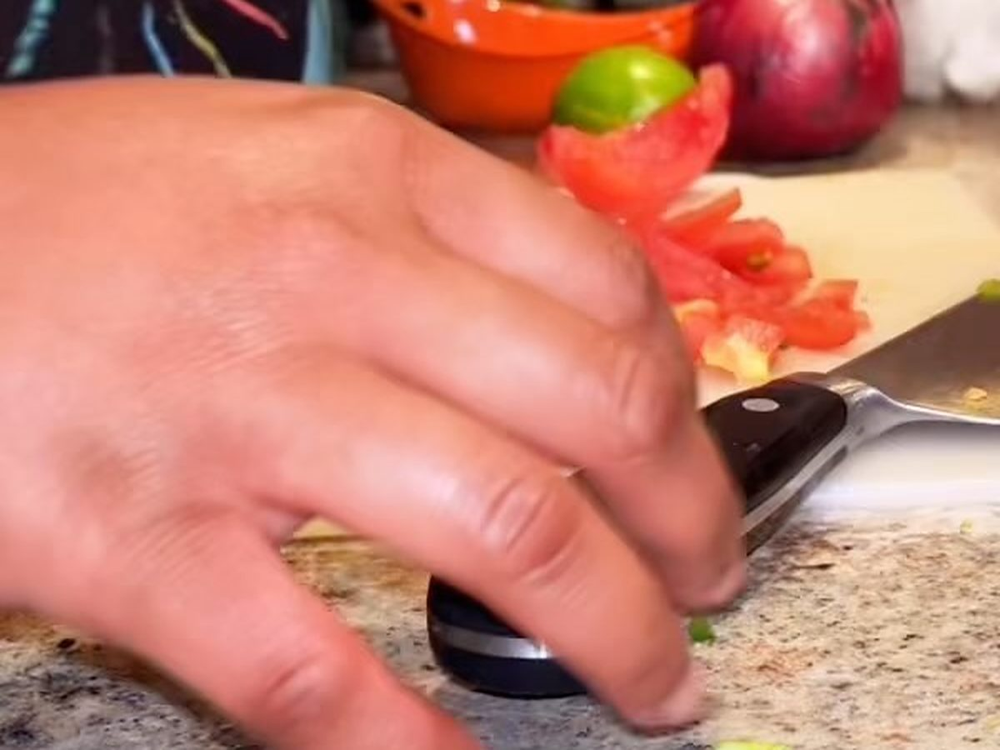

Three culinary schools, the first at 21 and one of them in New York. Each taught her something the others did not — which is why her range does not look like any one school’s house style.
About
Chef Daija
Three culinary schools. Two cities. One person cooking your plate.

One person, in a real kitchen.
That is her at the prep table — gloves on, wrappers going out one at a time. There is no line behind her and no second cook. Every tray of egg rolls, every catering pan, every plate on this site came off that board.
A phone still from her own kitchen. She films while she works, which is the only reason there is a picture of this at all.
Professional kitchens in Philadelphia and New York. Philly taught her the plate people actually want to eat. New York taught her the pace.
Japanese technique and jerk, plus marinades she builds herself. That combination is the thing you cannot get anywhere else in West Philly.

Read one marinade and you have got her.
The miso glazed chicken runs miso paste, honey, ginger, garlic, green onions, fish sauce, anchovy sauce and soy. The rice under it is cooked in butter, garlic, thyme and rosemary. That is a Japanese base, a French habit with the aromatics, and a Philly portion.
Then she will turn around and put jerk on lamb chops and serve it with mac and cheese and collard greens. Both plates are hers. Neither is a copy.
She has never been casual about her food.

If you were around her and you did not eat what she cooked, it was a problem. Not a joke — an actual argument. That is the tell. People who cook because it pays do not fight you over a plate. People who cook because it is how they say something do.
Her own words, from her page:
“If you know me you know I’ve always had a passion for cooking ! I went to restaurant school at walnut hill college at 21! I’ve been in and out of the culinary field for the last 5 years. I’ve always loved cooking all my life and experimented with different flavors and ingredients!”
Her word for it
“Snapped.”
It is what she says when a dish comes out the way she wanted. “I snappped on the seafood salad real crab meat and shrimp !!” · “I’m back in the kitchen snapping again !” If she says she snapped on it, order it.
Nothing sits under a heat lamp. She cooks when the order comes in, which is why she asks you for a day and a time.
No staff, no line, no franchise. If it came out of her kitchen, she made it. That includes the catering trays.
Orders come to her by text and payment goes to her Cash App. Nobody takes a cut in the middle.
Balance
Why there are two menus
She is a Libra and it shows in the work — heat against sweet, rich against sharp, one side of the menu against the other. The Kitchen feeds everybody. The Infusion is for the grown folks. Two pans on the same scale, and she will not send a plate out that leans wrong.